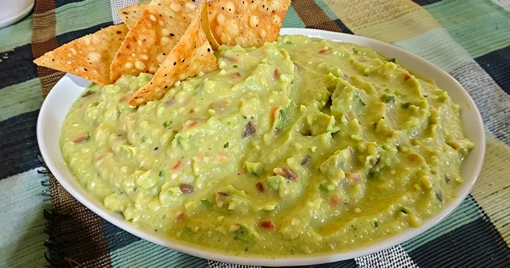
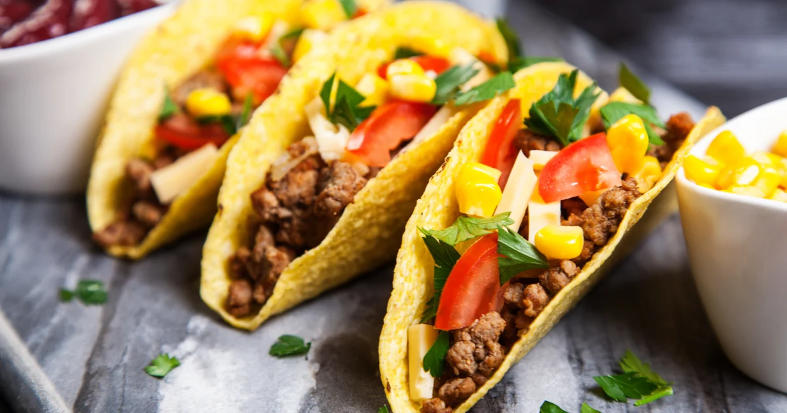
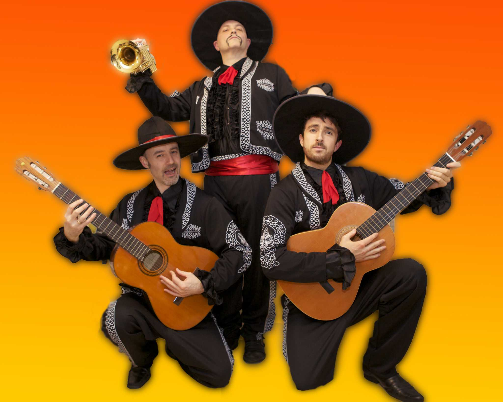
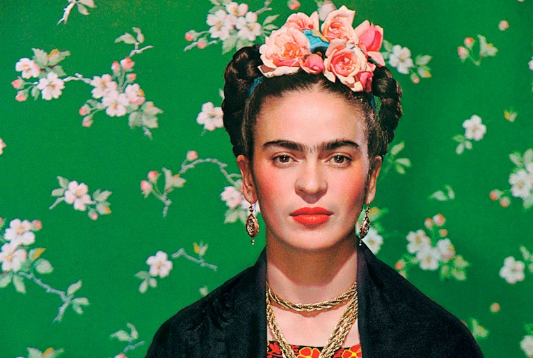
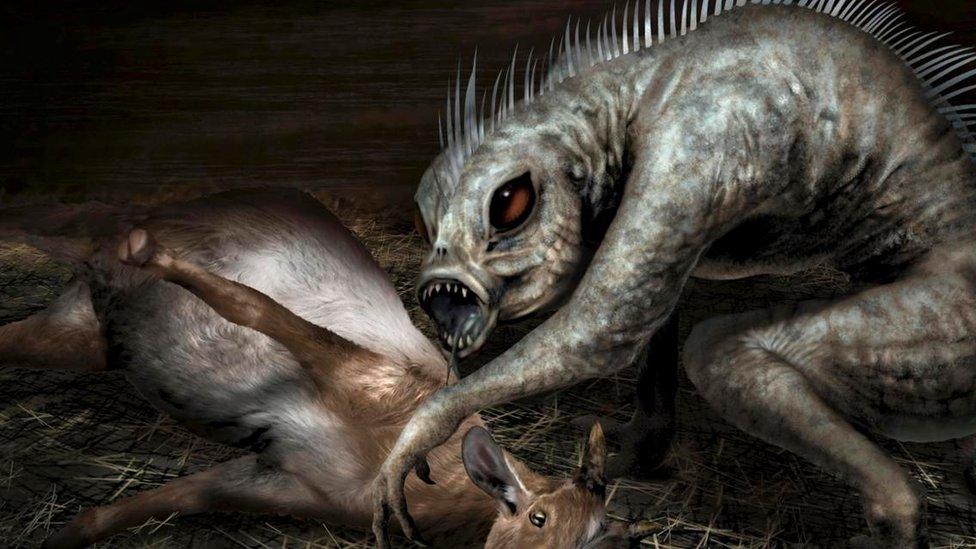
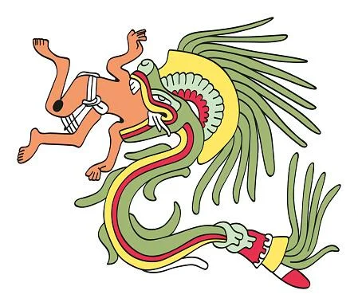
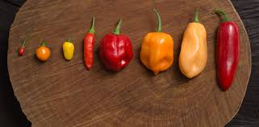
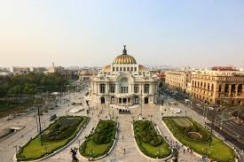

<!DOCTYPE html>
<html lang="en">
<head>
  <meta charset="UTF-8">
  <meta name="viewport" content="width=device-width, initial-scale=1.0">
  <title>Curiosidades</title>
  
  <link href="https://cdn.jsdelivr.net/npm/bootstrap@5.3.8/dist/css/bootstrap.min.css" rel="stylesheet"
    integrity="sha384-sRIl4kxILFvY47J16cr9ZwB07vP4J8+LH7qKQnuqkuIAvNWLzeN8tE5YBujZqJLB" crossorigin="anonymous">
  <link rel="stylesheet" href="css/estilo.css">

</head>
<body>
  
</body>
</html>

<head>
  <meta charset="utf-8">
  <meta name="viewport" content="width=device-width, initial-scale=1">

  <nav class="navbar navbar-expand-lg bg-body-tertiary">
    <div class="container-fluid">
      <button class="navbar-toggler" type="button" data-bs-toggle="collapse" data-bs-target="#navbarTogglerDemo01"
        aria-controls="navbarTogglerDemo01" aria-expanded="false" aria-label="Toggle navigation">
        <span class="navbar-toggler-icon"></span>
      </button>
      <div class="collapse navbar-collapse" id="navbarTogglerDemo01">
        
        <ul class="navbar-nav me-auto mb-2 mb-lg-0">
          <li class="nav-item">
            <a class="nav-link active" aria-current="page" href="#">Início</a>
          </li>
          <li class="nav-item">
            <a class="nav-link" href="#">Copa do Mundo</a>
          </li>
          <li class="nav-item">
            <a class="nav-link disabled" aria-disabled="true">Curiosidades</a>
          </li>
        </ul>
        <form class="d-flex" role="search">
          <input class="form-control me-2" type="search" placeholder="Buscar" aria-label="Search" />
          <button class="btn btn-outline-success" type="submit">Buscar</button>
        </form>
      </div>
    </div>
  </nav>

  <title>Curiosidades do Time</title>

  <!-- Bootstrap CSS -->
  <link href="https://cdn.jsdelivr.net/npm/bootstrap@5.3.8/dist/css/bootstrap.min.css" rel="stylesheet">

  <!-- CSS personalizado -->
  <link rel="stylesheet" href="css/curiosidades.css">
</head>

<body>

<!-- TÍTULO PRINCIPAL -->
<div class="container text-center mt-4">
  <h1> Curiosidades Culturais do MÉXICO </h1>
  <p>Comidas, cultura e tradições</p>
</div>

<!-- CARROSSEL -->
<div id="carouselExample" class="carousel slide container mt-4">

  <!-- Indicadores -->
  <div class="carousel-indicators">
    <button type="button" data-bs-target="#carouselExample" data-bs-slide-to="0" class="active"></button>
    <button type="button" data-bs-target="#carouselExample" data-bs-slide-to="1"></button>
    <button type="button" data-bs-target="#carouselExample" data-bs-slide-to="2"></button>
  </div>

  <!-- Imagens do carrossel -->
  <div class="carousel-inner">

    <div class="carousel-item active">
      
    </div>

    <div class="carousel-item">
      
    </div>

    <div class="carousel-item">
      
    </div>

  </div>

  <!-- Botões do carrossel -->
  <button class="carousel-control-prev" type="button" data-bs-target="#carouselExample" data-bs-slide="prev">
    <span class="carousel-control-prev-icon"></span>
  </button>

  <button class="carousel-control-next" type="button" data-bs-target="#carouselExample" data-bs-slide="next">
    <span class="carousel-control-next-icon"></span>
  </button>

</div>

<!-- CARDS -->
<div class="container mt-5">

  <div class="row g-4">

    <!-- Card 1 -->
    <div class="col-md-4">
      <div class="card">
        
        <div class="card-body">
          <h5 class="card-title">Día de los Muertos</h5>
          <p class="card-text">No México, o Dia dos Mortos é uma celebração de origem indígena comemorada no dia 2 de novembro em honra aos falecidos e quando as almas são autorizadas a visitar os parentes vivos.</p>
        </div>
      </div>
    </div>

    <!-- Card 2 -->
    <div class="col-md-4">
      <div class="card">
        
        <div class="card-body">
          <h5 class="card-title">Mariachis</h5>
          <p class="card-text">Mariachis são músicos tradicionais do folclore mexicano que tocam canções animadas e românticas usando trajes típicos e instrumentos acústicos.</p>
        </div>
      </div>
    </div>

    <!-- Card 3 -->
    <div class="col-md-4">
      <div class="card">
        
        <div class="card-body">
          <h5 class="card-title"> Frida Kahlo </h5>
          <p class="card-text">Frida Kahlo (1907–1954) foi uma célebre pintora mexicana, conhecida por seus autorretratos, cores vibrantes e obras autobiográficas marcadas por temas como dor, identidade, gênero e a cultura mexicana.</p>
        </div>
      </div>
    </div>

    <!-- Card 4 -->
    <div class="col-md-4">
      <div class="card">
        
        <div class="card-body">
          <h5 class="card-title"> Chupa Cabra </h5>
          <p class="card-text">O chupacabra é uma criatura lendária do folclore das Américas, famoso por supostamente atacar animais de criação, como cabras e galinhas, e drenar todo o seu sangue.</p>
        </div>
      </div>
    </div>

    <!-- Card 5 -->
    <div class="col-md-4">
      <div class="card">
        
        <div class="card-body">
          <h5 class="card-title"> Grito de Dolores </h5>
          <p class="card-text">Comemorado em 15 de setembro, marca o início da Independência do México. O presidente do país recria o "grito" na varanda do Palácio Nacional na Cidade do México, enquanto a população responde com entusiasmo: "Viva México!".</p>
        </div>
      </div>
    </div>

    <!-- Card 6 -->
    <div class="col-md-4">
      <div class="card">
        
        <div class="card-body">
          <h5 class="card-title"> Serpente Emplumada </h5>
          <p class="card-text"> Divindade principal de várias culturas mesoamericanas, que representa a união entre a terra (serpente) e o céu (penas do pássaro quetzal).</p>
        </div>
      </div>
    </div>

         <!-- Card 7 -->
    <div class="col-md-4">
      <div class="card">
        
        <div class="card-body">
          <h5 class="card-title"> Chaves </h5>
          <p class="card-text"> um menino pobre que passa sua infância em uma pequena vila ao lado de seus amigos, Chiquinha e Quico. Ele cria complicações para os adultos Seu Madruga, Seu Barriga, Professor Girafales, Dona Florinda e a Dona Clotilde.</p>
        </div>
      </div>
    </div>
        <!-- Card 8 -->
    <div class="col-md-4">
      <div class="card">
        
        <div class="card-body">
          <h5 class="card-title"> Pimenta mexicana</h5>
          <p class="card-text"> Pimenta é o nome comum dado a várias plantas, seus frutos e condimentos deles obtidos, de sabor geralmente picante. Porém, este termo tem acepções diferentes nos vários países lusófonos. No Brasil, o termo refere-se tanto às espécies de Capsicum como as de Piper.</p>
        </div>
      </div>
    </div>
        <!-- Card 9 -->
    <div class="col-md-4">
      <div class="card">
        
        <div class="card-body">
          <h5 class="card-title">Museu de Belas Artes do México</h5>
          <p class="card-text">Palacio de Bellas Artes é o principal teatro de ópera da Cidade do México. O edifício é famoso pela sua arquitectura exterior, em estilo Beaux Arts utilizando mármore branco de Carrara, e pelos seus murais interiores por Diego Rivera, Rufino Tamayo, David Alfaro Siqueiros, e José Clemente Orozco.</p>
        </div>
      </div>
    </div>

  </div>
</div>

<!-- RODAPÉ -->
<div class="text-center mt-5 mb-3">
  <p>Desenvolvido pelo 1 DS</p>
</div>

<!-- Bootstrap JS -->
<script src="https://cdn.jsdelivr.net/npm/bootstrap@5.3.8/dist/js/bootstrap.bundle.min.js"></script>

</body>
</html>